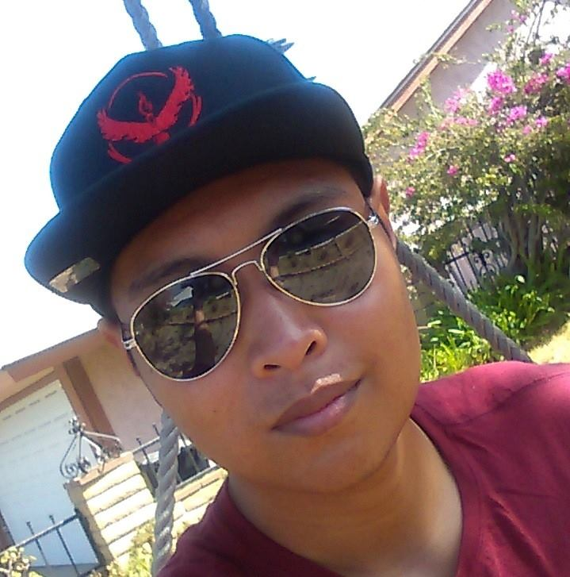

Welcome to my website lol
I am Joseph Tristan Manlutac Pacia and I was born under in San Diego, CA on June 22, 1995 and spent most of my life growing up as a white-washed Filipino in Murrieta, CA.
Being raised in a Navy family, most of my early childhood is composed of constantly moving to different places including Alameda, CA, Yokosuka, Kanagawa, San Diego, CA, Hemet, CA, and Murrieta, CA.
I started attending Chaparral High School at Temecula, CA in 2009 and graduated in 2013.
I started attending Mt. San Jacinto College at Menifee, CA in 2013 and transferred to UCR, where I currently attend, in 2016.
Well this is awkward...